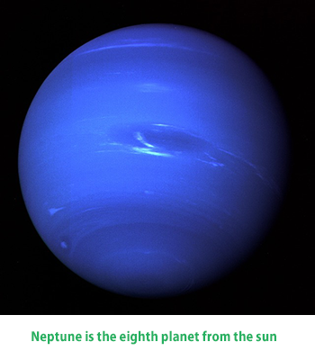

Neptune is the eighth and farthest planet from the Sun in the Solar System. It is the fourth-largest planet by diameter and the third-largest by mass. Among the gaseous planets in the Solar System, Neptune is the most dense. Neptune is 17 times the mass of Earth and is slightly more massive than its near-twin Uranus, which is 15 times the mass of Earth but not as dense. Neptune orbits the Sun at an average distance of 30.1 astronomical units. Named after the Roman god of the sea, its astronomical symbol is ?, a stylised version of the god Neptune's trident.
Neptune was the first planet found by mathematical prediction rather than by empirical observation. Unexpected changes in the orbit of Uranus led Alexis Bouvard to deduce that its orbit was subject to gravitational perturbation by an unknown planet. Neptune was subsequently observed on 23 September 1846 by Johann Galle within a degree of the position predicted by Urbain Le Verrier, and its largest moon, Triton, was discovered shortly thereafter, though none of the planet's remaining 13 moons were located telescopically until the 20th century. Neptune has been visited by one spacecraft, Voyager 2, which flew by the planet on 25 August 1989.
